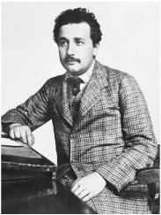

At the Patent Office, 1905
Turn of the Century 世纪之交
“There is nothing new to be discovered in physics now,” the revered Lord Kelvin reportedly told the British Association for the Advancement of Science in 1900. “All that remains is more and more precise measurement.”1 He was wrong.
1900年，据说德高望重的开尔文勋爵在英国科学促进会举行的讲演中说：“当前，物理学中已经没有什么新东西可以发现了，剩下的事情就是把测量做得越来越精确而已。” 后来的事实证明，这种说法过于自信了。
The foundations of classical physics had been laid by Isaac Newton (1642–1727) in the late seventeenth century. Building on the discoveries of Galileo and others, he developed laws that described a very comprehensible mechanical universe: a falling apple and an orbiting moon were governed by the same rules of gravity, mass, force, and motion. Causes produced effects, forces acted upon objects, and in theory everything could be explained, determined, and predicted. As the mathematician and astronomer Laplace exulted about Newton’s universe, “An intelligence knowing all the forces acting in nature at a given instant, as well as the momentary positions of all things in the universe, would be able to comprehend in one single formula the motions of the largest bodies as well as the lightest atoms in the world; to him nothing would be uncertain, the future as well as the past would be present to his eyes.”2
17世纪末，牛顿（1642—1727）奠定了经典物理学的基础。他根据伽利略等人的发现，提出了描述宇宙的力学定律，使宇宙在相当程度上为理性所统辖：无论是下落的苹果，还是沿轨道运转的月球，支配它们的都是关于引力、质量、力和运动的相同定律。原因产生结果，力作用于物体，万事万物从理论上讲都可以得到解释、确定和预言。难怪数学家、天文学家拉普拉斯对牛顿的宇宙发出了由衷的赞叹：“如果有一种智慧能够在某一时刻了解在自然中起作用的所有的力，了解宇宙万物的瞬时位置，那么他就可以用一个单独的公式来概括宇宙万物的运动，从最大的天体到最轻的原子，概莫能外：在他看来，没有什么东西是不确定的，未来和过去都能一目了然。”
Einstein admired this strict causality, calling it “the profoundest characteristic of Newton’s teaching.”3 He wryly summarized the history of physics: “In the beginning (if there was such a thing) God created Newton’s laws of motion together with the necessary masses and forces.” What especially impressed Einstein were “the achievements of mechanics in areas that apparently had nothing to do with mechanics,” such as the kinetic theory he had been exploring, which explained the behavior of gases as being caused by the actions of billions of molecules bumping around.4
爱因斯坦欣赏这种严格的因果性，称它为“牛顿学说最深刻的特征”。 他在总结物理学史时带着调侃的语气说：“起初（假如有这样的起初的话），上帝创造了牛顿的运动定律以及必需的质量和力。”给爱因斯坦留下最深刻印象的是“力学在那些看似与力学无关的领域中的成就”，比如他一直在研究的分子运动论就是如此。根据分子运动论，气体的状态和特性是由无数相互碰撞的分子的活动所引起的。
In the mid-1800s, Newtonian mechanics was joined by another great advance. The English experimenter Michael Faraday (1791– 1867), the self-taught son of a blacksmith, discovered the properties of electrical and magnetic fields. He showed that an electric current produced magnetism, and then he showed that a changing magnetic field could produce an electric current. When a magnet is moved near a wire loop, or vice versa, an electric current is produced.5
19世纪中叶，牛顿力学又与另一项重大进展结合了起来。出身于铁匠家庭的自学成才的英国实验家法拉第（1791—1867），发现了电场与磁场的特性，即电流可以产生磁场，变化的磁场也可以产生电流。当磁体在线圈附近运动，或者线圈在磁体附近运动时，线圈中就会产生电流。
Faraday’s work on electromagnetic induction permitted inventive entrepreneurs like Einstein’s father and uncle to create new ways of combining spinning wire coils and moving magnets to build electricity generators. As a result, young Albert Einstein had a profound physical feel for Faraday’s fields and not just a theoretical understanding of them.
正是由于法拉第发现了电磁感应，像爱因斯坦的父亲和舅舅这样富于创造力的企业主才能设计出新的方法将旋转线圈与运动磁体结合起来，从而制造出发电机。因此，对于法拉第的场，年轻的爱因斯坦不仅有理论上的理解，而且还感同身受。
The bushy-bearded Scottish physicist James Clerk Maxwell (1831–1879) subsequently devised wonderful equations that specified, among other things, how changing electric fields create magnetic fields and how changing magnetic fields create electrical ones. A changing electric field could, in fact, produce a changing magnetic field that could, in turn, produce a changing electric field, and so on. The result of this coupling was an electromagnetic wave.
后来，胡须浓密的苏格兰物理学家麦克斯韦（1831—1879）提出了一组美妙的电磁场方程，规定了变化的电场如何产生磁场，以及变化的磁场如何产生电场。事实上，变化的电场能够产生变化的磁场，而这个变化的磁场又会产生变化的电场，如此无穷交替下去，结果便会产生电磁波。
Just as Newton had been born the year that Galileo died, so Einstein was born the year that Maxwell died, and he saw it as part of his mission to extend the work of the Scotsman. Here was a theorist who had shed prevailing biases, let mathematical melodies lead him into unknown territories, and found a harmony that was based on the beauty and simplicity of a field theory.
牛顿出生于伽利略逝世那一年，爱因斯坦则出生于麦克斯韦逝世那一年。爱因斯坦认为自己的部分使命就在于拓展这个苏格兰人的工作。麦克斯韦摈弃流行的偏见，让数学引领他走入了未知的领域，从而发现了一种和谐，这种和谐乃是建立在场论的美和简单性之上。
All of his life, Einstein was fascinated by field theories, and he described the development of the concept in a textbook he wrote with a colleague:
爱因斯坦终生都对场论着迷。在一本与人合写的教科书中，他这样来描述场的概念的发展：
A new concept appeared in physics, the most important invention since Newton’s time: the field. It needed great scientific imagination to realize that it is not the charges nor the particles but the field in the space between the charges and the particles that is essential for the description of physical phenomena. The field concept proved successful when it led to the formulation of Maxwell’s equations describing the structure of the electromagnetic field.6
物理学中出现了一种新的概念，这是自牛顿时代以来最重大的发明：场。要想认识到它既不是电荷，也不是粒子，而是对于描述物理现象至关重要的电荷与粒子之间的空间中的场，这需要极大的科学想象力。麦克斯韦方程的特色显现在现代物理学的所有其他方程式中，这种特色可以用一句话来概括，即麦克斯韦方程是表示场的结构的定律。事实证明，场的概念是成功的，因为由它我们提出了描述电磁场结构的麦克斯韦方程。
At first, the electromagnetic field theory developed by Maxwell seemed compatible with the mechanics of Newton. For example, Maxwell believed that electromagnetic waves, which include visible light, could be explained by classical mechanics—if we assume that the universe is suffused with some unseen, gossamer “light-bearing ether” that serves as the physical substance that undulates and oscillates to propagate the electromagnetic waves, comparable to the role water plays for ocean waves and air plays for sound waves.
起初，麦克斯韦的电磁场论似乎与牛顿力学相容。例如，麦克斯韦认为包括可见光在内的电磁波都可以通过经典力学来解释——我们只需假设宇宙中充满着一些看不见的、稀薄的“承载光的以太”就可以了。电磁波正是通过这种“以太”的起伏振荡来传播的，就像水传播大海的波浪，空气传播声波一样。
By the end of the nineteenth century, however, fissures had begun to develop in the foundations of classical physics. One problem was that scientists, as hard as they tried, could not find any evidence of our motion through this supposed light-propagating ether. The study of radiation—how light and other electromagnetic waves emanate from physical bodies—exposed another problem: strange things were happening at the borderline where Newtonian theories, which described the mechanics of discrete particles, interacted with field theory, which described all electromagnetic phenomena.
然而到了19世纪末，经典物理学根基处的裂痕开始暴露出来。一个问题是，科学家们无论怎样努力，都无法找到这种光以太存在的任何证据。对辐射的研究（即光和其他电磁波如何从物体发射出来）则暴露出了另一个问题：描述离散粒子力学的牛顿理论与描述一切电磁现象的场论在发生交叠时发生了一些奇特的事情。
Up until then, Einstein had published five little-noted papers. They had earned him neither a doctorate nor a teaching job, even at a high school. Had he given up theoretical physics at that point, the scientific community would not have noticed, and he might have moved up the ladder to become the head of the Swiss Patent Office, a job in which he would likely have been very good indeed.
这时，爱因斯坦已经发表了5篇不太为人所知的论文。这些论文既没有使他得到博士学位，也没有帮他获得一份教职，哪怕是在中学教书。倘若他这时放弃理论物理学，科学界丝毫也不会注意到。他也许会由此平步青云，当上瑞士专利局局长，而且很可能会在这个位子上优哉游哉。
There was no sign that he was about to unleash an annus mirabilis the like of which science had not seen since 1666, when Isaac Newton, holed up at his mother’s home in rural Woolsthorpe to escape the plague that was devastating Cambridge, developed calculus, an analysis of the light spectrum, and the laws of gravity.
没有任何迹象表明，他即将迎来一个“奇迹年”（annus mirabilis）。自1666年以来，科学界再也没有出现过类似的年份。当时牛顿隐居在伍尔索普（Woolsthorpe）乡下躲避正在剑桥肆虐的瘟疫，在此期间他发明了微积分，对光谱进行了分析，还提出了万有引力定律。
But physics was poised to be upended again, and Einstein was poised to be the one to do it. He had the brashness needed to scrub away the layers of conventional wisdom that were obscuring the cracks in the foundation of physics, and his visual imagination allowed him to make conceptual leaps that eluded more traditional thinkers.
物理学的大厦即将倾覆，而肇始者将是爱因斯坦。其坚持己见使他可以抛开普遍看法，洞悉物理学根基处所隐藏的裂痕。他的形象思维使他能够实现概念上的飞跃，而大多数传统思想家却无法迈出这一步。
The breakthroughs that he wrought during a four-month frenzy from March to June 1905 were heralded in what would become one of the most famous personal letters in the history of science. Conrad Habicht, his fellow philosophical frolicker in the Olympia Academy, had just moved away from Bern, which, happily for historians, gave a reason for Einstein to write to him in late May.
1905年3月到6月，爱因斯坦在4个月里接连实现了种种意想不到的突破，这些成果曾在科学史上的一封非常著名的私人信件中有所预示。那时，他在奥林匹亚科学院的哲学伙伴哈比希特刚刚搬离伯尔尼，于是爱因斯坦5月底给他写信说：
Dear Habicht,
亲爱的哈比希特：
Such a solemn air of silence has descended between us that I almost feel as if I am committing a sacrilege when I break it now with some inconsequential babble . . .
咱俩之间笼罩着一种神圣的沉默，倘若我现在用某种无足轻重的废话来打破它，我会感到我似乎是在亵渎……
So, what are you up to, you frozen whale, you smoked, dried, canned piece of soul ...? Why have you still not sent me your dissertation? Don’t you know that I am one of the 1½ fellows who would read it with interest and pleasure, you wretched man? I promise you four papers in return. The first deals with radiation and the energy properties of light and is very revolutionary, as you will see if you send me your work first. The second paper is a determination of the true sizes of atoms ... The third proves that bodies on the order of magnitude 1/1000 mm, suspended in liquids, must already perform an observable random motion that is produced by thermal motion. Such movement of suspended bodies has actually been observed by physiologists who call it Brownian molecular motion. The fourth paper is only a rough draft at this point, and is an electrodynamics of moving bodies which employs a modification of the theory of space and time.7
那么你究竟在忙些什么呢？你这头冷冻的鲸鱼，你这熏干的罐装的灵魂片……你为什么还不把你的博士论文寄给我呢？你这可怜的家伙难道不知道，在1.5个会有兴致津津有味地拜读这篇大作的伙伴中，我就是其中之一吗？我答应你以四篇论文作为回报。第一篇讲的是辐射和光的能量特征，是非常革命性的，只要你先把你的大作寄给我，你就会明白；第二篇论文是……测定原子的实际大小；第三篇论文证明悬浮在液体中的1/1000毫米数量级的物体，必定会做一种由热运动引起的可观察到的无规则运动。事实上，生理学家们已经观察到了这种悬浮体的运动，他们把这类运动称为“布朗分子运动”；第四篇论文目前还处于草创阶段，内容是动体的电动力学，它修正了时空理论。
Light Quanta, March 1905 光量子，1905年3月
As Einstein noted to Habicht, it was the first of these 1905 papers, not the famous final one expounding a theory of relativity, that deserved the designation “revolutionary.” Indeed, it may contain the most revolutionary development in the history of physics. Its suggestion that light comes not just in waves but in tiny packets—quanta of light that were later dubbed “photons”—spirits us into strange scientific mists that are far murkier, indeed more spooky, than even the weirdest aspects of the theory of relativity.
正如爱因斯坦向哈比希特指出的，在1905年写的这些论文中，是第一篇，而不是提出相对论的著名的最后一篇，才称得上是“革命性的”。的确，这篇论文也许包含着物理学史上最具革命性的进展。它认为，光不仅以波的形式，而且也以光量子（后来被称为光子）这种小能量包的形式发射出来。这一结论使我们笼罩在科学的重重迷雾之中，它甚至比相对论最奇特的方面都要令人费解和诧异。
Einstein recognized this in the slightly odd title he gave to the paper, which he submitted on March 17, 1905, to the Annalen der Physik: “On a Heuristic Point of View Concerning the Production and Transformation of Light.”8 Heuristic? It means a hypothesis that serves as a guide and gives direction in solving a problem but is not considered proven. From this first sentence he ever published about quantum theory until his last such sentence, which came in a paper exactly fifty years later, just before he died, Einstein regarded the concept of the quanta and all of its unsettling implications as heuristic at best: provisional and incomplete and not fully compatible with his own intimations of underlying reality.
在1905年3月17日寄给《物理学纪事》的论文中，爱因斯坦已经认识到了这一点。这篇论文有一个略显古怪的名字：“关于光的产生和转化的一个试探性的观点”。 试探性的？这意味着它是一个假说，只能充当解决问题的先导，而并非已经得到证明。从他发表的这篇量子理论的处女作，一直到50年后发表的最后一篇论文，爱因斯坦一直都认为令人困惑的量子概念至多是试探性的，是临时性的和不完备的，与他本人关于基本实在的看法并不能完全相容。
At the heart of Einstein’s paper were questions that were bedeviling physics at the turn of the century, and in fact have done so from the time of the ancient Greeks until today: Is the universe made up of particles, such as atoms and electrons? Or is it an unbroken continuum, as a gravitational or electromagnetic field seems to be? And if both methods of describing things are valid at times, what happens when they intersect?
爱因斯坦的论文所关注的是在世纪之交困扰着物理学的那些问题。事实上，这些问题自古希腊以来就一直得不到解决：宇宙是由像原子和电子这样的粒子构成的，还是像引力场或电磁场那样是一个不间断的连续体？倘若两种描述方法都是有效的，那么当它们发生交叠时会发生什么？
Since the 1860s, scientists had been exploring just such a point of intersection by analyzing what was called “blackbody radiation.” As anyone who has played with a kiln or a gas burner knows, the glow from a material such as iron changes color as it heats up. First it appears to radiate mainly red light; as it gets hotter, it glows more orange, and then white and then blue. To study this radiation, Gustav Kirchhoff and others devised a closed metal container with a tiny hole to let a little light escape. Then they drew a graph of the intensity of each wavelength when the device reached equilibrium at a certain temperature. No matter what the material or shape of the container’s walls, the results were the same; the shape of the graphs depended only on the temperature.
自19世纪60年代起，科学家们就一直在分析所谓的“黑体辐射”，以探究这样一个交截点。了解窑炉或煤气灶的人都知道，当铁这样的材料被加热时，发出的光会改变颜色。当温度较低时，它主要辐射出红光；随着温度的升高，它所发出的光会相继变为橙色、白色和蓝色。为了研究这一辐射，基尔霍夫等人设计了一种封闭的金属容器，上面有一个小孔，可以供少量的光逸出。然后，当这个设备在某一温度达到平衡时，画出每一种波长的强度。结果发现，不论腔壁的材料或形状如何，图的形状仅仅与平衡态的温度有关。
There was, alas, a problem. No one could fully account for the basis of the mathematical formula that would produce the hill-like shape of these graphs.
令人不解的是，没有人能说清楚这些山状图形所对应的数学公式的基础是什么。
When Kirchhoff died, his professorship at the University of Berlin was given to Max Planck. Born in 1858 into an ancient German family of great scholars, theologians, and lawyers, Planck was many things that Einstein was not: with his pince-nez glasses and meticulous dress, he was very proudly German, somewhat shy, steely in his resolve, conservative by instinct, and formal in his manner. “It is difficult to imagine two men of more different attitudes,” their mutual friend Max Born later said. “Einstein a citizen of the whole world, little attached to the people around him, independent of the emotional background of the society in which he lived—Planck deeply rooted in the traditions of his family and nation, an ardent patriot, proud of the greatness of German history and consciously Prussian in his attitude to the state.”9
基尔霍夫去世后，普朗克接替他在柏林大学任教授。1858年，普朗克出生于一个德国家庭，祖上都是了不起的学者、神学家和律师。在许多方面，普朗克都与爱因斯坦迥异。普朗克戴着一副夹鼻眼镜，穿着考究，以身为德国人而自豪。他比较腼腆，目标坚定，天性保守，举止刻板。“很难想象还有哪两人的性情比他们更为不同，”他们的朋友马克斯·玻恩后来说，“爱因斯坦是一个世界公民，对周围的人没有什么依恋，不大受社会情感背景的牵制：而普朗克则深深地植根于他的家庭和民族传统，是一个热情洋溢的爱国者，为德国的伟大历史而自豪，对国家自觉秉持着普鲁士式的态度。”
His conservatism made Planck skeptical about the atom, and of particle (rather than wave and continuous field) theories in general. As he wrote in 1882, “Despite the great success that the atomic theory has so far enjoyed, ultimately it will have to be abandoned in favor of the assumption of continuous matter.” In one of our planet’s little ironies, Planck and Einstein would share the fate of laying the groundwork for quantum mechanics, and then both would flinch when it became clear that it undermined the concepts of strict causality and certainty they both worshipped.10
保守主义使得普朗克对原子论表示怀疑，甚至对一般的粒子理论（而不是波动理论和连续的场论）也持保留态度。正如他1882年所说：“尽管迄今为止原子论已经取得了巨大成功，但我们最终将会放弃它，而去支持连续物质的假设。”一个小小的讽刺是，虽然普朗克和爱因斯坦同属量子力学的奠基人，但是当情况渐趋明朗，量子力学将会破坏他们共同遵奉的严格因果性和确定性概念时，两人又都畏缩不前了。
In 1900, Planck came up with an equation, partly using what he called “a fortuitous guess,” that described the curve of radiation wavelengths at each temperature. In doing so he accepted that Boltzmann’s statistical methods, which he had resisted, were correct after all. But the equation had an odd feature: it required the use of a constant, which was an unexplained tiny quantity (approximately 6.62607 x 10–34 joule-seconds), that needed to be included for it to come out right. It was soon dubbed Planck’s constant, h, and is now known as one of the fundamental constants of nature.
1900年，出于所谓的“偶然猜测”，普朗克构想了一个方程来描述每一温度下的福射波长曲线。在这一过程中，他承认玻尔兹曼的统计方法是正确的，而此前他并不承认这种方法。但这个方程有一个奇怪的地方，那就是它需要用到一个常量才能得到正确的结果。这个常量非常小（约为6.62607×10-34焦·秒），而且得不到解释。这个常量h不久将被称为普朗克常量，现在是自然界的基本常量之一。
At first Planck had no idea what, if any, physical meaning this mathematical constant had. But then he came up with a theory that, he thought, applied not to the nature of light itself but to the action that occurred when the light was absorbed or emitted by a piece of matter. He posited that the surface of anything that was radiating heat and light—such as the walls in a blackbody device—contained “vibrating molecules” or “harmonic oscillators,” like little vibrating springs.11 These harmonic oscillators could absorb or emit energy only in the form of discrete packets or bundles. These packets or bundles of energy came only in fixed amounts, determined by Planck’s constant, rather than being divisible or having a continuous range of values.
起初，普朗克并不知道这个数学常量有什么样的物理意义（如果有的话）。但随后他提出了一种理论，将这个常量不是应用于光本身的性质，而是应用于光被物质吸收或发射时发生的作用。他假定辐射热和光的任何物体表面（比如一个黑体的腔壁）都包含着像振动的小弹簧一样的“振动分子”或“谐振子”。 这些谐振子只能吸收或发射一个个能量包。这些能量包不能继续分下去，也没有一个连续的能量范围，而必须是由普朗克常量所确定的固定的量。
Planck considered his constant a mere calculational contrivance that explained the process of emitting or absorbing light but did not apply to the fundamental nature of light itself. Nevertheless, the declaration he made to the Berlin Physical Society in December 1900 was momentous: “We therefore regard—and this is the most essential point of the entire calculation—energy to be composed of a very definite number of equal finite packages.”12
普朗克仅仅把他的常量看成一种计算上的发明，为的是说明光的吸收或发射过程，而没有将它与光本身的基本性质挂起钩来。然而，1900年12月，他在柏林物理学会做的报告中却振聋发聩地说：“我们认为——这是整个计算中最为关键的一点——能量是由确定数目的、彼此相等的、有限的能量包构成的。”
Einstein quickly realized that quantum theory could undermine classical physics. “All of this was quite clear to me shortly after the appearance of Planck’s fundamental work,” he wrote later. “All of my attempts to adapt the theoretical foundation of physics to this knowledge failed completely. It was as if the ground had been pulled out from under us, with no firm foundation to be seen anywhere.”13
爱因斯坦很快就认识到，量子理论很可能会颠覆经典物理学。“普朗克基础性的工作出现后不久，我就看清楚了所有这一切，”他后来写道，“我试图将物理学的理论基础与这种知识调和起来，但所有努力都以彻底失败而告终。就好像我们脚下的地面突然消失，任何地方都看不到坚实的地基。”
In addition to the problem of explaining what Planck’s constant was really all about, there was another curiosity about radiation that needed to be explained. It was called the photoelectric effect, and it occurs when light shining on a metal surface causes electrons to be knocked loose and emitted. In the letter he wrote to Mari right after he learned of her pregnancy in May 1901, Einstein enthused over a “beautiful piece” by Philipp Lenard that explored this topic.
right after he learned of her pregnancy in May 1901, Einstein enthused over a “beautiful piece” by Philipp Lenard that explored this topic.
除了普朗克常量的意义需要解释，关于辐射还有一个奇特的现象。它被称为光电效应，即照射到金属表面的光会使电子松动，并最终使它发射出来。1901年5月，在给刚刚怀孕的米列娃的信中，爱因斯坦对研究光电效应的勒纳德所写的一篇“美文”表现出了极大的热情。
Lenard’s experiments found something unexpected. When he increased the frequency of the light—moving from infrared heat and red light up in frequency to violet and ultraviolet—the emitted electrons sped out with much more energy. Then, he increased the intensity of the light by using a carbon arc light that could be made brighter by a factor of 1,000. The brighter, more intense light had a lot more energy, so it seemed logical that the electrons emitted would have more energy and speed away faster. But that did not occur. More intense light produced more electrons, but the energy of each remained the same. This was something that the wave theory of light did not explain.
勒纳德的实验得出了一些意想不到的结果。当他把光的频率由红外和红跃升至紫和紫外时，电子会以更高的能量发射出来。然后，他用碳弧灯把光的强度提高1000倍。由于光越亮越强，拥有的能量就越多，所以从逻辑上讲，发射出来的电子似乎应当拥有更多的能量，速度也更快。但事实并非如此。更强的光虽然能够使更多的电子逸出，但每个电子的能量却和原来一样。光的波动说无法解释这种现象。
Einstein had been pondering the work of Planck and Lenard for four years. In his final paper of 1904, “On the General Molecular Theory of Heat,” he discussed how the average energy of a system of molecules fluctuates. He then applied this to a volume filled with radiation, and found that experimental results were comparable. His concluding phrase was, “I believe that this agreement must not be ascribed to chance.”14 As he wrote to his friend Conrad Habicht just after finishing that 1904 paper, “I have now found in a most simple way the relation between the size of elementary quanta of matter and the wavelengths of radiation.” He was thus primed, so it seems, to form a theory that the radiation field was made up of quanta.15
爱因斯坦思考普朗克和勒纳德的工作已经有四年之久。在1904年写的最后一篇论文《关于热的一般分子理论》中，爱因斯坦讨论了分子系统平均能量的涨落情况。接着，他把这种理论运用于充满辐射的腔中，发现实验结果是类似的。他在这篇论文的结尾说：“我相信这种一致必定不是出于巧合。” 他在写完这篇论文之后给朋友哈比希特写信说：“我以一种极为简洁的方式发现了物质基本量子的尺寸与辐射波长之间的关系。”关于辐射场由量子构成这样一种理论，他似乎已经胸有成竹了。
In his 1905 light quanta paper, published a year later, he did just that. He took the mathematical quirk that Planck had discovered, interpreted it literally, related it to Lenard’s photoelectric results, and analyzed light as if it really was made up of pointlike particles—light quanta, he called them—rather than being a continuous wave.
在1905年发表的那篇光量子论文中，他的确是这样做的。他解释了普朗克的发现，丝毫不回避它在数学上的怪异之处，并且将它与勒纳德的光电效应实验结果联系了起来，认为光似乎真由点粒子（他称之为光量子）构成，而不是一种连续的波。
Einstein began his paper by describing the great distinction between theories based on particles (such as the kinetic theory of gases) and theories that involve continuous functions (such as the electromagnetic fields of the wave theory of light). “There exists a profound formal difference between the theories that physicists have formed about gases and other ponderable bodies, and Maxwell’s theory of electromagnetic processes in so-called empty space,” he noted. “While we consider the state of a body to be completely determined by the positions and velocities of a very large, yet finite, number of atoms and electrons, we make use of continuous spatial functions to describe the electromagnetic state of a given volume.”16
爱因斯坦在论文的一开始就指出，建立在粒子基础上的理论（比如气体分子运动论）和涉及连续函数的理论（比如光的波动说的电磁场）之间有着巨大的差别。“在物理学家关于气体和其他有重物体所形成的理论观念同麦克斯韦关于所谓空虚空间中的电磁过程理论之间，有着深刻的形式上的不同，”他指出，“我们认为一个物体的状态完全由有限数目的大量原子和电子的位置和速度所决定，而为了描述一个给定空间的电磁状态，我们需要利用连续的空间函数。”
Before he made his case for a particle theory of light, he emphasized that this would not make it necessary to scrap the wave theory, which would continue to be useful as well. “The wave theory of light, which operates with continuous spatial functions, has worked well in the representation of purely optical phenomena and will probably never be replaced by another theory.”
在提出自己的理由证明光的微粒说之前，他强调这并不必然意味着否定光的波动说，波动说仍然可以继续发挥作用。“用连续空间函数来运算的光的波动说，在描述纯粹的光学现象时，已被证明是十分卓越的，也许很难被另一种理论所取代”。
His way of accommodating both a wave theory and a particle theory was to suggest, in a “heuristic” way, that our observation of waves involve statistical averages of the positions of what could be countless particles. “It should be kept in mind,” he said, “that the optical observations refer to time averages rather than instantaneous values.”
他将波动说和微粒说调和起来的“试探性”方法是，我们观察到的波动现象涉及对大量粒子位置的统计平均。“可是不应忘记，”他说，“光学观测涉及的都是时间平均值，而不是瞬时值。”
Then came what may be the most revolutionary sentence that Einstein ever wrote. It suggests that light is made up of discrete particles or packets of energy: “According to the assumption to be considered here, when a light ray is propagated from a point, the energy is not continuously distributed over an increasing space but consists of a finite number of energy quanta which are localized at points in space and which can be produced and absorbed only as complete units.”
接着便出现了爱因斯坦最具革命性的说法。他提出，光是由离散的粒子或能量包构成的：“根据这里所考虑的假设，从点光源发射出来的光束能量在传播过程中不是连续分布在越来越大的空间之中，而是由数量有限的、局限在空间各点的能量子所构成，这些能量子只能整个地被产生或吸收。”
Einstein explored this hypothesis by determining whether a volume of blackbody radiation, which he was now assuming consisted of discrete quanta, might in fact behave like a volume of gas, which he knew consisted of discrete particles. First, he looked at the formulas that showed how the entropy of a gas changes when its volume changes. Then he compared this to how the entropy of blackbody radiation changes as its volume changes. He found that the entropy of the radiation “varies with volume according to the same law as the entropy of an ideal gas.”
爱因斯坦研究这一假说的方法是，确定一定体积内的黑体辐射（他假设由离散的量子构成）的性质是否类似于一定体积的气体（由离散的粒子构成）。他将气体的熵随体积变化的公式与黑体辐射的熵随体积变化的公式进行比较，结果发现，辐射的熵“按照理想气体的熵随体积变化的定律而变化”。
He did a calculation using Boltzmann’s statistical formulas for entropy. The statistical mechanics that described a dilute gas of particles was mathematically the same as that for blackbody radiation. This led Einstein to declare that the radiation “behaves thermodynamically as if it consisted of mutually independent energy quanta.” It also provided a way to calculate the energy of a “particle” of light at a particular frequency, which turned out to be in accord with what Planck had found.17
他又根据玻尔兹曼关于熵的统计公式做了计算。既然描述由粒子构成的稀薄气体的统计力学在数学上等同于描述黑体辐射的公式，爱因斯坦由此宣称，辐射“在热力学上就好像是由彼此独立的能量子构成的”。他还提供了一种计算在某一特定频率下光“粒子”能量的方法，这种方法与普朗克的发现一致。
Einstein went on to show how the existence of these light quanta could explain what he graciously called Lenard’s “pioneering work” on the photoelectric effect. If light came in discrete quanta, then the energy of each one was determined simply by the frequency of the light multiplied by Planck’s constant. If we assume, Einstein suggested, “that a light quantum transfers its entire energy to a single electron,” then it follows that light of a higher frequency would cause the electrons to emit with more energy. On the other hand, increasing the intensity of the light (but not the frequency) would simply mean that more electrons would be emitted, but the energy of each would be the same.
接下来，爱因斯坦就用这些光量子来解释勒纳德在光电效应方面的“先驱性工作”。如果光是一个个离散的量子，那么每一个光量子的能量就仅仅由光的频率乘以普朗克常量来确定。爱因斯坦提出，如果我们假设“光量子把全部能量传递给一个电子”，那么较高频率的光就会使电子以较高的能量发射出来。而提高光的强度（而不是频率）仅仅意味着射出更多数目的电子，但每个电子的能量仍然保持不变。
That was precisely what Lenard had found. With a trace of humility or tentativeness, along with a desire to show that his conclusions had been deduced theoretically rather than induced entirely from experimental data, Einstein declared of his paper’s premise that light consists of tiny quanta: “As far as I can see, our conception does not conflict with the properties of the photoelectric effect observed by Mr. Lenard.”
而这恰恰就是勒纳德发现的结果。带着一种谦卑或试探性，同时也是为了表明他的结论是从理论上推出来的，而不是完全由实验数据归纳而来，爱因斯坦宣布了论文的前提，即光是由微小的量子构成的：“就我的认识所及，我们的构想并不与勒纳德先生所观察到的光电效应的性质相冲突。”
By blowing on Planck’s embers, Einstein had turned them into a flame that would consume classical physics. What precisely did Einstein produce that made his 1905 paper a discontinuous—one is tempted to say quantum—leap beyond the work of Planck?
就这样，爱因斯坦朝着普朗克留下的余烬吹了一口气，燃起的火焰将会焚毁整个经典物理学的大厦。爱因斯坦1905年的论文到底贡献在哪里，使它成为相对于普朗克工作的一个不连续的（量子式的）跃迁？
In effect, as Einstein noted in a paper the following year, his role was that he figured out the physical significance of what Planck had discovered.18 For Planck, a reluctant revolutionary, the quantum was a mathematical contrivance that explained how energy was emitted and absorbed when it interacted with matter. But he did not see that it related to a physical reality that was inherent in the nature of light and the electromagnetic field itself. “One can interpret Planck’s 1900 paper to mean only that the quantum hypothesis is used as a mathematical convenience introduced in order to calculate a statistical distribution, not as a new physical assumption,” write science historians Gerald Holton and Steven Brush.19
实际上，正如爱因斯坦在次年一篇论文中所指出的，他使人认识到了普朗克的发现的物理意义。 在普朗克这样一个不情愿的革命者看来，量子是一种数学发明，解释的是在与物质相互作用时能量如何被发射和吸收。但他没有看到，量子与光的本性和电磁场本身所涉及的物理实在有关。“可以认为，普朗克1900年的论文只是意味着，量子假说被当作一种数学发明，引入它是为了计算一种统计分布，而不是作为一种新的物理假设。”科学史家霍尔顿和史蒂文·布拉什写道。
Einstein, on the other hand, considered the light quantum to be a feature of reality: a perplexing, pesky, mysterious, and sometimes maddening quirk in the cosmos. For him, these quanta of energy (which in 1926 were named photons)20 existed even when light was moving through a vacuum. “We wish to show that Mr. Planck’s determination of the elementary quanta is to some extent independent of his theory of blackbody radiation,” he wrote. In other words, Einstein argued that the particulate nature of light was a property of the light itself and not just some description of how the light interacts with matter.21
而爱因斯坦则把光量子当成实在的一种特征，它充满神秘，令人困惑，有时甚至让人疯狂。在他看来，甚至当光穿过真空时，这些能量子（1926年才被命名为光子） 也存在着。“我们希望表明，普朗克先生对基本量子的确定在某种程度上独立于他的黑体辐射理论”。换句话说，爱因斯坦主张，光的微粒性是光本身的一种属性，而不仅仅是对光如何与物质相互作用的一种描述。
Even after Einstein published his paper, Planck did not accept his leap. Two years later, Planck warned the young patent clerk that he had gone too far, and that quanta described a process that occurred during emission or absorption, rather than some real property of radiation in a vacuum. “I do not seek the meaning of the ‘quantum of action’ (light quantum) in the vacuum but at the site of absorption and emission,” he advised.22
甚至在爱因斯坦发表了论文之后，普朗克也没有接受他的理论。两年后，普朗克警告这位年轻的专利员说，他走得过了头，量子描述的是发射或吸收的过程，而不是真空中辐射的某种真实属性。“我要寻求的并不是真空中‘作用量子’（光量子）的意义，而是想发现吸收和放射处的作用量子的意义。”他指出。
Planck’s resistance to believing that the light quanta had a physical reality persisted. Eight years after Einstein’s paper was published, Planck proposed him for a coveted seat in the Prussian Academy of Sciences. The letter he and other supporters wrote was filled with praise, but Planck added: “That he might sometimes have overshot the target in his speculations, as for example in his light quantum hypothesis, should not be counted against him too much.”23
普朗克不承认光量子具有物理实在性，这种抵触情绪一直持续着。在爱因斯坦的论文发表八年之后，普朗克提名他接管普鲁士科学院的一个令人羨慕的席位。他和其他支持者写的推荐信充满了溢美之词，但普朗克还是补充说：“有时候他可能思辨过了火，比如他的光量子假说就是如此，对此我们不应求全责备。”
Just before he died, Planck reflected on the fact that he had long recoiled from the implications of his discovery. “My futile attempts to fit the elementary quantum of action somehow into classical theory continued for a number of years and cost me a great deal of effort,” he wrote. “Many of my colleagues saw in this something bordering on a tragedy.”
就在去世之前不久，普朗克对自己长期以来的畏缩不前做了反省。“多年以来，我一直试图将基本作用量子与经典理论调和起来，结果徒劳无功，枉费了许多心力，”他写道，“我的许多同事认为这几乎是一场悲剧。”
Ironically, similar words would later be used to describe Einstein. He became increasingly “aloof and skeptical” about the quantum discoveries he pioneered, Born said of Einstein. “Many of us regard this as a tragedy.”24
具有讽刺意味的是，类似的话后来也被用来形容爱因斯坦。玻恩说，他对自己开创性的量子发现变得愈发“疏离和怀疑”，“我们许多人都认为这是一场悲剧”。
Einstein’s theory produced a law of the photoelectric effect that was experimentally testable: the energy of emitted electrons would depend on the frequency of the light according to a simple mathematical formula involving Planck’s constant. The formula was subsequently shown to be correct. The physicist who did the crucial experiment was Robert Millikan, who would later head the California Institute of Technology and try to recruit Einstein.
爱因斯坦的理论引出了可以得到实验证实的光电效应定律：出射电子的能量依赖于光的频率，其中的关系满足一个包含着普朗克常量的简单的数学公式。后来发现，这一公式是正确的。完成这项重要实验的是物理学家罗伯特·安德鲁斯·密立根，他后来执掌加州理工学院，并试图邀请爱因斯坦加盟。
Yet even after he verified Einstein’s photoelectric formulas, Millikan still rejected the theory. “Despite the apparently complete success of the Einstein equation,” he declared, “the physical theory on which it was designed to be the symbolic expression is found so untenable that Einstein himself, I believe, no longer holds to it.”25
然而，即使是证明了爱因斯坦的光电效应公式之后，密立根也仍然拒绝这种理论。“尽管爱因斯坦的方程式显然大获成功，”他说，“但这种符号表达式所基于的物理理论却被发现是站不住脚的，我相信爱因斯坦本人也不再会坚持它。”
Millikan was wrong to say that Einstein’s formulation of the photo-electric effect had been abandoned. In fact, it was specifically for discovering the law of the photoelectric effect that Einstein would win his only Nobel Prize. With the advent of quantum mechanics in the 1920s, the reality of the photon became a fundamental part of physics.
密立根错误地认为，爱因斯坦对光电效应的表述已经被抛弃了。事实上，正是由于发现了光电效应定律，爱因斯坦才被授予了他唯一的诺贝尔奖。随着20世纪20年代量子力学的进展，光子的实在性成为物理学的基本内容。
However, on the larger point Millikan was right. Einstein would increasingly find the eerie implications of the quantum—and of the wave-particle duality of light—to be deeply unsettling. In a letter he wrote near the end of his life to his dear friend Michele Besso, after quantum mechanics had been accepted by almost every living physicist, Einstein would lament, “All these fifty years of pondering have not brought me any closer to answering the question, What are light quanta?”26
然而从另一个角度讲，密立根是正确的。量子（以及光的波粒二象性）的怪异内涵将越来越使爱因斯坦感到不安。到了爱因斯坦的晚年，量子力学几乎已经被每一位在世的物理学家所接受，他在给老朋友贝索写的一封信中悲叹道：“整整50年的思考都没有使我更接近于回答‘光量子是什么’这个问题。
Doctoral Dissertation on the Size of Molecules, April 1905 关于分子大小的博士论文，1905年4月
Einstein had written a paper that would revolutionize science, but he had not yet been able to earn a doctorate. So he tried one more time to get a dissertation accepted.
爱因斯坦已经写过一篇将给科学带来革命的论文，但他还没有得到一个博士学位。所以他再次尝试写出一篇能够被接受的博士论文。
He realized that he needed a safe topic, not a radical one like quanta or relativity, so he chose the second paper he was working on, titled “A New Determination of Molecular Dimensions,” which he completed on April 30 and submitted to the University of Zurich in July.27
他意识到需要选一个比较安全的题目，而不是像量子或相对论这样激进，所以他选择正在写作的第二篇论文作为博士论文，它的标题为“分子大小的新测定法”，完成于4月30日，7月提交给苏黎世大学。
Perhaps out of caution and deference to the conservative approach of his adviser, Alfred Kleiner, he generally avoided the innovative statistical physics featured in his previous papers (and in his Brownian motion paper completed eleven days later) and relied instead mainly on classical hydrodynamics.28 Yet he was still able to explore how the behavior of countless tiny particles (atoms, molecules) are reflected in observable phenomena, and conversely how observable phenomena can tell us about the nature of those tiny unseen particles.
也许是出于谨慎以及对他保守的导师克莱纳的顺从，他总的来讲避免了先前论文（以及11天后完成的那篇布朗运动论文）中的那些革新性的统计物理学，而是主要依赖于经典的流体力学。 不过他探讨的仍然是无数微小粒子（原子、分子）的行为如何反映于可观察的现象中，以及相反地，可观察的现象如何能够告诉我们那些微小的不可见粒子的性质。
Almost a century earlier, the Italian scientist Amedeo Avogadro (1776–1856) had developed the hypothesis—correct, as it turned out—that equal volumes of any gas, when measured at the same temperature and pressure, will have the same number of molecules. That led to a difficult quest: figuring out just how many this was.
大约一个世纪以前，意大利科学家阿梅迪欧·阿伏伽德罗（1776-1856）提出了一个假说（后来被证明是正确的），即任何等体积的气体在同一温度和压强下的分子数都相同。问题在于，如何确定这个数到底是多少。
The volume usually chosen is that occupied by a mole of the gas (its molecular weight in grams), which is 22.4 liters at standard temperature and pressure. The number of molecules under such conditions later became known as Avogadro’s number. Determining it precisely was, and still is, rather difficult. A current estimate is approximately 6.02214 x 1023. (This is a big number: that many unpopped popcorn kernels when spread across the United States would cover the country nine miles deep.)29
通常选取的体积是一摩尔气体（以克计算，气体的重量为它的相对分子质量）所占据的体积，在标准温度和压强下是22.4升。后来，在这些条件下的分子数被称为阿伏伽德罗常数。精确地测定这个常数无论在当时还是现在都相当困难。当时的估计大约为6.02214×1023（这个数字非常巨大，如果用这么多颗玉米粒铺满美国的国土，那么玉米的厚度可达9英里）。
Most previous measurements of molecules had been done by studying gases. But as Einstein noted in the first sentence of his paper, “The physical phenomena observed in liquids have thus far not served for the determination of molecular sizes.” In this dissertation (after a few math and data corrections were later made), Einstein was the first person able to get a respectable result using liquids.
以前对分子的大多数测量都是通过研究气体进行的。但爱因斯坦在他的论文一开头就指出：“液体中观测到的物理现象直到目前还没有用来计算分子的大小。”在这篇博士论文中（在后来做了几处数学和数据的修正之后），爱因斯坦第一次用液体获得了理想的结果。
His method involved making use of data about viscosity, which is how much resistance a liquid offers to an object that tries to move through it. Tar and molasses, for example, are highly viscous. If you dissolve sugar in water, the solution’s viscosity increases as it gets more syrupy. Einstein envisioned the sugar molecules gradually diffusing their way through the smaller water molecules. He was able to come up with two equations, each containing the two unknown variables—the size of the sugar molecules and the number of them in the water—that he was trying to determine. He could then solve for these unknown variables. Doing so, he got a result for Avogadro’s number that was 2.1 x 1023.
他利用了一些关于黏性的数据，即液体会对物体产生多大阻力。例如，柏油和糖蜜的黏性非常大。如果你把糖溶解在水中，那么随着水越来越甜，溶液的黏性也越来越大。爱因斯坦设想，糖分子正逐渐通过扩散穿过较小的水分子。他得出了两个方程，每一个方程都包含着他试图确定的两个未知变量一糖分子的大小和水中糖分子的数目，然后求出这些未知量。这样，他得到的阿伏伽德罗常数是2.1×1023。
That, unfortunately, was not very close. When he submitted his paper to the Annalen der Physik in August, right after it had been accepted by Zurich University, the editor Paul Drude (who was blissfully unaware of Einstein’s earlier desire to ridicule him) held up its publication because he knew of some better data on the properties of sugar solutions. Using this new data, Einstein came up with a result that was closer to correct: 4.15 x 1023.
不幸的是，它与正确结果还有一定差距。就在论文被苏黎世大学接受之后不久，他8月将论文提交给了《物理学纪事》，编辑德鲁德（好在他不知道爱因斯坦曾经喜欢取笑他）将它推迟发表，因为他知道有一些关于糖溶液性质的更好的数据。利用这些新的数据，爱因斯坦得出了一个更加准确的结果：4.15×23。
A few years later, a French student tested the approach experimentally and discovered something amiss. So Einstein asked an assistant in Zurich to look at it all over again. He found a minor error, which when corrected produced a result of 6.56 x 1023, which ended up being quite respectable.30
几年以后，一位法国学者用实验检验了这一理论，并且发现了其中的一些差错。于是爱因斯坦要苏黎世的一个助手再重新仔细检查一遍。结果发现了一个小错误，纠正之后得到的结果是6.56×1023，这一结果已经相当理想了。
Einstein later said, perhaps half-jokingly, that when he submitted his thesis, Professor Kleiner rejected it for being too short, so he added one more sentence and it was promptly accepted. There is no documentary evidence for this.31 Either way, his thesis actually became one of his most cited and practically useful papers, with applications in such diverse fields as cement mixing, dairy production, and aerosol products. And even though it did not help him get an academic job, it did make it possible for him to become known, finally, as Dr. Einstein.
爱因斯坦后来半开玩笑地说，当他提交论文时，克莱纳教授说它太短了，所以他又加了一句话，于是很快就被接受了。没有什么证据支持这一说法。 无论如何，这篇论文实际上成了他被引次数最多、最实用的论文之一，它被用于水泥加工、奶制品生产和气雾剂制造等诸多领域。即使这篇论文没能帮爱因斯坦找到一份学术职位，但他的确因此而为人所知，并且最终，成了爱因斯坦博士。
Brownian Motion, May 1905 布朗运动，1905年5月
Eleven days after finishing his dissertation, Einstein produced another paper exploring evidence of things unseen. As he had been doing since 1901, he relied on statistical analysis of the random actions of invisible particles to show how they were reflected in the visible world.
在完成博士论文11天后，爱因斯坦写了另一篇论文来证明不可见粒子存在的证据。从1901年开始，他就一直在对不可见粒子的随机运动进行统计分析，以表明它们如何在可见世界中得到反映。
In doing so, Einstein explained a phenomenon, known as Brownian motion, that had been puzzling scientists for almost eighty years: why small particles suspended in a liquid such as water are observed to jiggle around. And as a byproduct, he pretty much settled once and for all that atoms and molecules actually existed as physical objects.
在这一过程中，爱因斯坦解释了一种被称为布朗运动的现象，它已经困扰了科学家80年之久：为什么悬浮在水等液体中的小颗粒被观察到在不停地抖动？作为副产品，他几乎一劳永逸地证明了一切原子、分子都是实际存在的物理客体。
Brownian motion was named after the Scottish botanist Robert Brown, who in 1828 had published detailed observations about how minuscule pollen particles suspended in water can be seen to wiggle and wander when examined under a strong microscope. The study was replicated with other particles, including filings from the Sphinx, and a variety of explanations was offered. Perhaps it had something to do with tiny water currents or the effect of light. But none of these theories proved plausible.
布朗运动是根据苏格兰植物学家罗伯特·布朗的名字命名的，他1828年通过高倍显微镜观察到，水中的小花粉颗粒在来回不规则地摆动摇晃。人们对其他微粒也做了研究，做出了各种不同的解释。兴许它与微小的水流或光的效应有些关系。但这些理论似乎都不能令人信服。
With the rise in the 1870s of the kinetic theory, which used the random motions of molecules to explain things like the behavior of gases, some tried to use it to explain Brownian motion. But because the suspended particles were 10,000 times larger than a water molecule, it seemed that a molecule would not have the power to budge the particle any more than a baseball could budge an object that was a half-mile in diameter.32
19世纪70年代，用分子的随机运动来解释气体行为的分子运动论兴起，有些人试图用它来解释布朗运动。但是因为悬浮颗粒比水分子大一万倍，所以一个分子似乎没有能力推动这些颗粒，就像棒球很难推动一个直径为半英里的物体一样。
Einstein showed that even though one collision could not budge a particle, the effect of millions of random collisions per second could explain the jig observed by Brown. “In this paper,” he announced in his first sentence, “it will be shown that, according to the molecular-kinetic theory of heat, bodies of a microscopically visible size suspended in liquids must, as a result of thermal molecular motions, perform motions of such magnitudes that they can be easily observed with a microscope.”33
爱因斯坦表明，虽然一次碰撞不可能推动一个颗粒，但每秒数十亿次随机碰撞所产生的效应却足以解释布朗所观察到的不规则运动。“在这篇论文中将要说明，”他开宗明义地说，“按照热的分子运动论，在显微镜下可见的物体悬浮在液体中，必定会发生其大小可以用显微镜容易观测到的运动。”
He went on to say something that seems, on the surface, somewhat puzzling: his paper was not an attempt to explain the observations of Brownian motion. Indeed, he acted as if he wasn’t even sure that the motions he deduced from his theory were the same as those observed by Brown: “It is possible that the motions to be discussed here are identical with so-called Brownian molecular motion; however, the data available to me on the latter are so imprecise that I could not form a judgment on the question.” Later, he distanced his work even further from intending to be an explanation of Brownian motion: “I discovered that, according to atomistic theory, there would have to be a movement of suspended microscopic particles open to observations, without knowing that observations concerning the Brownian motion were already long familiar.”34
他接下来的说法似乎有些令人困惑。他说这篇论文并不是为了解释观察到的布朗运动。事实上，他甚至并不确信从他的理论中推导出来的运动是否就是布朗所观察到的运动。“这里所讨论的运动可能就是所谓的‘布朗分子运动’：可是，关于后者我所能得到的资料是如此的不准确，以致在这个问题上我无法形成判断。”接着，他进一步将自己的工作与试图找到布朗运动的解释区分开来：“我发现，根据原子论，一定会有一种可以观察到的悬浮微粒的运动，而我并不知道，关于这种布朗运动的观察实际上早已为人所熟知了。”
At first glance his demurral that he was dealing with Brownian motion seems odd, even disingenuous. After all, he had written Conrad Habicht a few months earlier, “Such movement of suspended bodies has actually been observed by physiologists who call it Brownian molecular motion.” Yet Einstein’s point was both true and significant: his paper did not start with the observed facts of Brownian motion and build toward an explanation of it. Rather, it was a continuation of his earlier statistical analysis of how the actions of molecules could be manifest in the visible world.
初看起来，他不承认自己是在讨论布朗运动似乎显得很奇怪，甚至是有失真诚。毕竟，他几个月前就曾给哈比希特写信说_“这些悬浮物体的运动已经被生理学家们实际观察到了，他们称之为布朗分子运动。”但爱因斯坦的说法并没错，而且很重要：他的论文的出发点并不是布朗运动被观察到这一事实，并试图对它做出解释，而是对其早先关于分子活动如何表现于可见世界的统计分析的延续。
In other words, Einstein wanted to assert that he had produced a theory that was deduced from grand principles and postulates, not a theory that was constructed by examining physical data (just as he had made plain that his light quanta paper had not started with the photo-electric effect data gathered by Philipp Lenard). It was a distinction he would also make, as we shall soon see, when insisting that his theory of relativity did not derive merely from trying to explain experimental results about the speed of light and the ether.
换言之，爱因斯坦想说，他提出的是一种从基本原理和假设推导出的理论，而不是通过考察物理数据构造出来的理论（就像他曾经说明的，他的光量子论文的出发点并非勒纳德所收集的那些光电效应数据）。我们不久就会看到，他的相对论也并不仅仅是为了解释关于光速和以太的实验数据。
Einstein realized that a bump from a single water molecule would not cause a suspended pollen particle to move enough to be visible. However, at any given moment, the particle was being hit from all sides by thousands of molecules. There would be some moments when a lot more bumps happened to hit one particular side of the particle. Then, in another moment, a different side might get the heaviest barrage.
爱因斯坦认识到，单个水分子的碰撞并不能使我们看到一个悬浮的花粉颗粒的运动。然而在任一瞬间，这个颗粒受到四面八方数千个分子的撞击。在某些瞬间，颗粒的某一侧面将会受到更多的撞击：而在另一些瞬间，另一侧面则会受到更多的撞击。
The result would be random little lurches that would result in what is known as a random walk. The best way for us to envision this is to imagine a drunk who starts at a lamppost and lurches one step in a random direction every second. After two such lurches he may have gone back and forth to return to the lamp. Or he may be two steps away in the same direction. Or he may be one step west and one step northeast. A little mathematical plotting and charting reveals an interesting thing about such a random walk: statistically, the drunk’s distance from the lamp will be proportional to the square root of the number of seconds that have elapsed.35
结果就会产生一些随机的小晃动，它将导致所谓的随机游走。为了理解这一点，我们不妨想象一个醉汉从一个灯柱踉踉跄跄地朝随机的方向每秒钟走一步。两秒钟之后，他或许又回到灯柱，也可能沿同一方向走了两步，还可能一步朝西走，一步朝东北走。关于这种随机游走有一个有趣的结论，那就是从统计上讲，醉汉在某一时间与灯柱的距离将与经过时间（秒数）的平方根成正比。
Einstein realized that it was neither possible nor necessary to measure each zig and zag of Brownian motion, nor to measure the particle’s velocity at any moment. But it was rather easy to measure the total distances of randomly lurching particles as these distances grew over time.
爱因斯坦认识到，测量布朗运动的每一次不规则运动既不可能也没必要，测量颗粒在任一瞬间的速度也是如此。但是随着距离随时间的增加，测量随机碰撞的颗粒的总距离却很容易。
Einstein wanted concrete predictions that could be tested, so he used both his theoretical knowledge and experimental data about viscosity and diffusion rates to come up with precise predictions showing the distance a particle should move depending on its size and the temperature of the liquid. For example, he predicted, in the case of a particle with a diameter of one thousandth of a millimeter in water at 17 degrees centigrade, “the mean displacement in one minute would be about 6 microns.”
爱因斯坦希望自己的预测结果能够得到检验，所以利用关于黏性和扩散率的理论知识和实验数据，他提出了精确的预测，表明颗粒将要走过的距离取决于它的大小和液体的温度。例如，对于一个直径为1/1000毫米在17摄氏度的水中的颗粒来说，他预言“一分钟之内的平均位移将约为6微米”。
Here was something that could actually be tested, and with great consequence. “If the motion discussed here can be observed,” he wrote, “then classical thermodynamics can no longer be viewed as strictly valid.” Better at theorizing than at conducting experiments, Einstein ended his paper with a charming exhortation: “Let us hope that a researcher will soon succeed in solving the problem presented here, which is so important for the theory of heat.”
这一结果可以实际进行检验，而且意义重大。他写道：“如果这里讨论的运动可以被观察到，那么经典热力学就不再能够被看成严格有效的。”由于自己更擅长理论而不是实验，所以爱因斯坦在论文的最后郑重其事地宣布：“我们希望有研究者不久就会成功地解决这里提出的问题，它对于热理论非常重要。”
Within months, a German experimenter named Henry Seidentopf, using a powerful microscope, confirmed Einstein’s predictions. For all practical purposes, the physical reality of atoms and molecules was now conclusively proven. “At the time atoms and molecules were still far from being regarded as real,” the theoretical physicist Max Born later recalled. “I think that these investigations of Einstein have done more than any other work to convince physicists of the reality of atoms and molecules.”36
几个月之内，德国实验物理学家亨利·塞登托普夫用强大的显微镜证实了爱因斯坦的预言。无论如何，原子和分子的物理实在性现在已经得到彻底证实。著名理论物理学家玻恩后来回忆说：“我们必须记住，在那个原子、分子远未被看作真实的时代，我认为爱因斯坦的这些发现要比其他任何工作都更有助于说服物理学家相信原子和分子的实在性。”
As lagniappe, Einstein’s paper also provided yet another way to determine Avogadro’s number. “It bristles with new ideas,” Abraham Pais said of the paper. “The final conclusion, that Avogadro’s number can essentially be determined from observations with an ordinary microscope, never fails to cause a moment of astonishment even if one has read the paper before and therefore knows the punch line.”
爱因斯坦的论文还提供了另一种测定阿伏伽德罗常数的方法，这是一个意想不到的收获。“它充满了新奇的思想，”亚伯拉罕·派斯对这篇论文评论道，“最终的结论，即阿伏伽德罗常数可以通过普通显微镜的观察测定出来，这实在令人惊讶，即使是以前读过这篇论文，知道文章妙处的人也不例外。”
A strength of Einstein’s mind was that it could juggle a variety of ideas simultaneously. Even as he was pondering dancing particles in a liquid, he had been wrestling with a different theory that involved moving bodies and the speed of light. A day or so after sending in his Brownian motion paper, he was talking to his friend Michele Besso when a new brainstorm struck. It would produce, as he wrote Habicht in his famous letter of that month, “a modification of the theory of space and time.”
爱因斯坦有一种能力，他能够同时进行不同的思考。甚至在研究液体中晃动的颗粒时，他也一直在冥思苦想一种涉及运动物体和光速的理论。就在寄出那篇布朗运动论文之后一天左右，他的灵感降临了，于是跟朋友贝索开始就这一理论进行探讨。正如他在那个月给哈比希特写的著名的信中所说，它是“对时空理论的一种修正”。